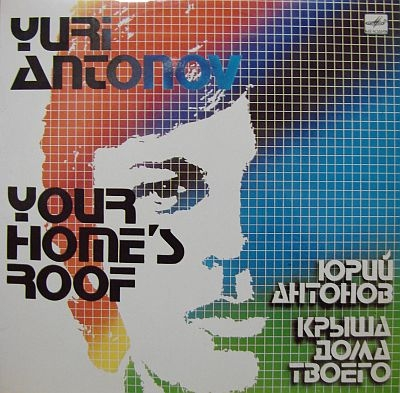

Сегодня на бизнес-линче у Лебедева обложка к альбому Юрия Антонова «Под крышей дома твоего».

По словам рецензирующего обложку Людвига Быстроновского она была создана в уже далеком 1983 году. И вроде как ничего особенного. Такую обложку сегодня можно сделать минут за 30. Правда я абсолютно не представляю как можно было 27 лет назад нарисовать градиент.
Надеюсь, что тут все-таки была задействована огромная ЭВМ и 8 инженеров в белых халатах. Рисовать градиент вручную думаю еще сложнее чем подделывать деньги.